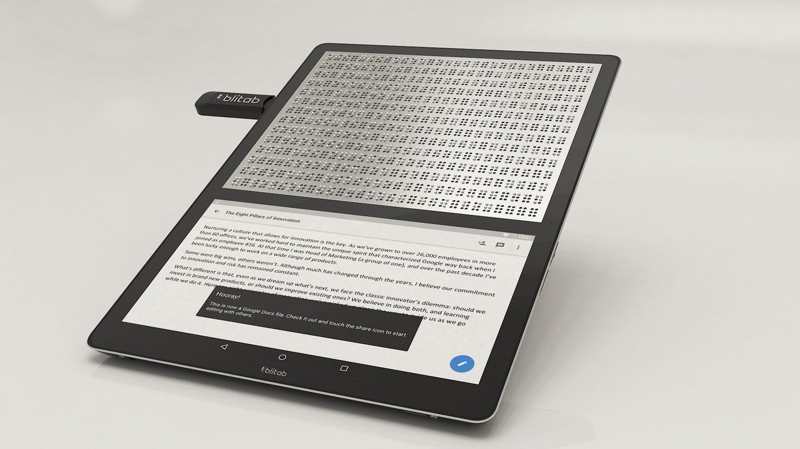
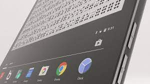
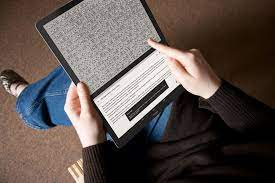

Blitab

solo el 1 % de toda la información actual está disponible en braille. Pero gracias a personas como Kristina Tsvetanova, creadora de la primera tablet táctil de mundo, personas con discapacidad pueden acceder a la información.
¿Qué es?

la primera tablet táctil de mundo pensada para que personas con algún tipo de deficiencia visual puedan acceder e interactuar con la información: Blitab. Este dispositivo consta de 2 pantallas. La superior es una pantalla en brille y la inferior es una pantalla táctil con Android controlable a través de la voz. El innovador producto Blitab se complementa con otro: BraiBook. Este dispositivo de lectura es capaz de convertir cualquier documento de texto, en formato electrónico y en cualquier idioma, al código braille.
¿Cómo funciona?

Blitab es la primera tablet braille que utiliza una tecnología de activación disruptiva para crear texto y gráficos táctiles en tiempo real. Permite la lectura de una página entera en una pantalla táctil, aprender, trabajar y jugar con un solo dispositivo móvil, y tener acceso digital a la información en tiempo real. Esta tablet convierte cualquier documento en texto braille a través de pequeños puntos inteligentes («tixels») que se levantan inmediatamente de la superficie y luego caen de nuevo cuando el texto cambia. Blitab capacita a niños y estudiantes en el proceso de aprendizaje y adquisición de nuevas habilidades en la escuela y la universidad, así como a adultos que utilizan la tablet braille en la oficina o en su tiempo libre para leer libros, navegar por Internet, etc.